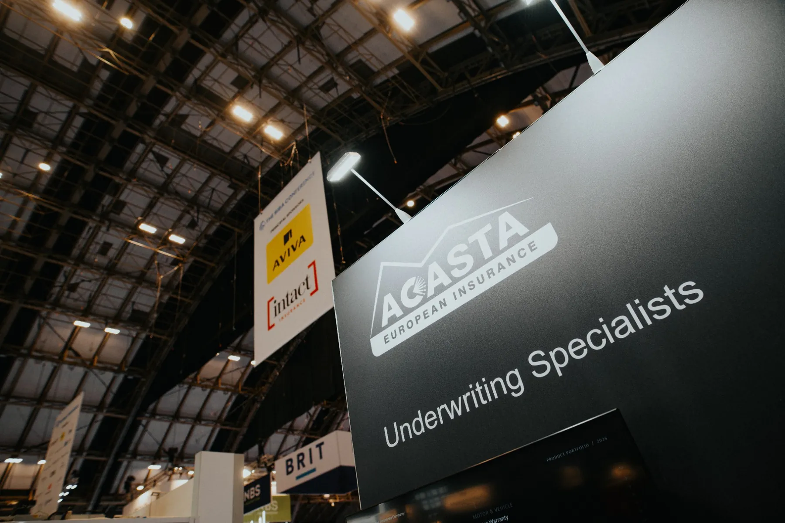
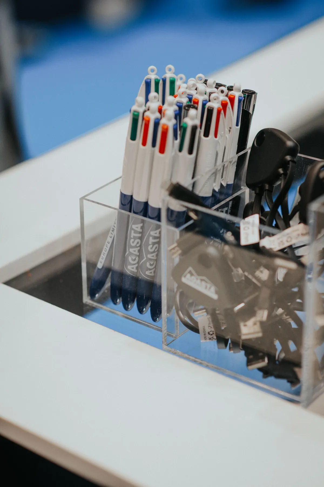
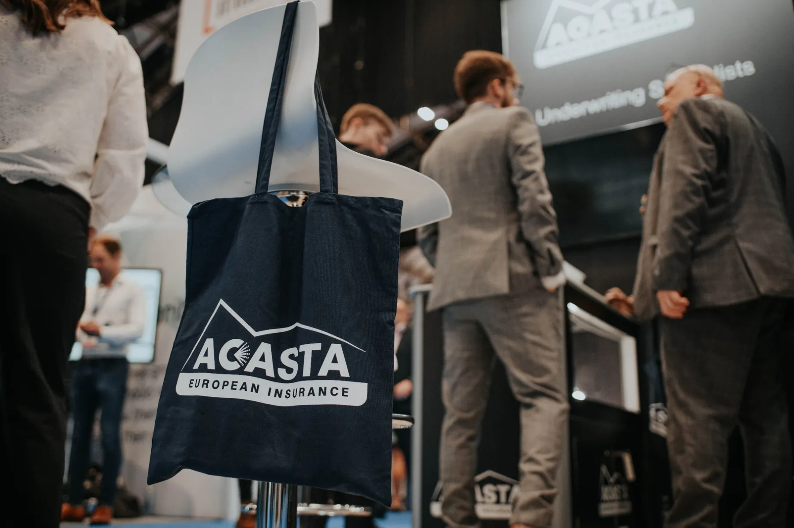

Acasta Europe · Integrated Event Marketing
BIBA Exhibition Campaign
End-to-end ownership of Acasta Europe’s BIBA presence, covering compliance, stand design, supplier management, pre-event communications, team coordination and lead generation.
The challenge
Turning the brief into measurable marketing.
Acasta Europe needed a strong, commercially focused presence at BIBA that represented the brand effectively, supported relationships with agents and created new-business opportunities for the sales team.
My approach
What I delivered.
I managed the exhibition project end to end. I updated the exhibitor portal with required company and compliance documentation, including Employers’ Liability, Public Liability and Professional Indemnity insurance certificates, Health & Safety documentation and fire-safety information. I selected and managed the stand-build and merchandise suppliers, designed the stand in line with brand guidelines, and used email marketing alongside the Head of Sales to inform agents and arrange meetings. On site, I signed off the stand with the designers, organised merchandise, created the stand rota for around six team members and arranged the lead-capture scanner. After the event, I exported the captured leads and passed them to the Head of Sales and sales team for follow-up.
Supporting evidence
The event photography below shows the finished stand and the scale of the conference. The professional reference is available from the main portfolio page.





